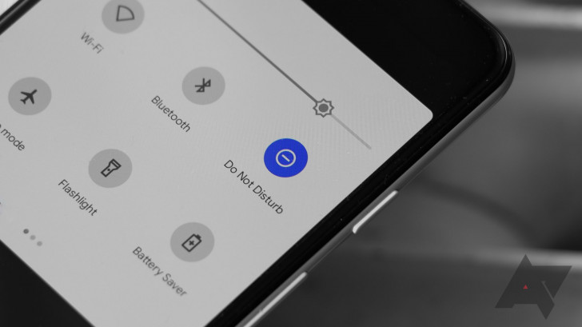

Staying focused during distance learning can be tough, but we came up with a few methods to remain productive during your online classes. There are a number of distractions you might face while in an online lesson, from your phone on the desk next to you, or the other tabs on your computer. Without the school environment; not having your teacher in front of you, not seeing your classmates in person, and not being active or not moving around can cause boredom and introduce distractions.

The first tip to help you stay focused during online lessons is to silence your phone and move it out of reach before class. If it’s out of reach, you’ll be less likely to pick it up and use it during class. Your phone will only distract you, so keeping it away from you will help you stay focused during your classes.
The second method to help you stay focused during online class is to further engage in the lesson. Turn on your camera so your teacher and peers can see you. This helps create a school-like atmosphere and will help you feel more connected to the lesson. If no one else has their camera on, turning yours on could encourage other students to do the same. If the teacher asks a question to the class, answer! This keeps your brain focused towards the lesson and away from distractions, like your phone.

The final method is to limit your screen time each day. At each break, either a 15 minute period between classes, or your 45 minute lunch break, get a breath of fresh air and stretch your legs. Walk around, get some water and something to eat, and keep an eye on the clock. By limiting your screen time, you will quickly feel better. Instead of being behind a screen for up to 8 hours, the small rests will break up the duration and make your school day feel shorter. Not only will you be focused for your next class, but you’ll also be healthier. Your eyes may hurt after being online for such a long time, but taking breaks can reduce the strain on your eyes. Your sitting posture at your desk can cause fatigue, but walking around during breaks can help your posture.